Executive Summary
Agriculture is one of the most hazardous occupations in the United States. Workers in agriculture, forestry, and fishing face fatality and injury rates up to 33 times higher than those in other industries. Yet comprehensive, timely safety data remain fragmented and incomplete, particularly on small and mid-size family farms, limiting the ability of producers, safety professionals, insurers, and educators to proactively assess risk.
Demeter was developed by VISIMO to address these gaps with a flexible, data-driven agricultural safety platform capable of operating despite incomplete, heterogeneous, and evolving data. Phase II focused on refining the application and advancing its predictive modeling capabilities through six technical objectives.
A central technical contribution was the integration of modern machine learning. NLP models encode free-text hazard descriptions into semantic embeddings, a Graph Neural Network (GNN) learns conceptual relationships between hazards and generalizes known risk patterns to new contexts, and a CLIP-based model provides visual verification for uploaded images. Alpha and beta testing refined usability, flexibility, and explainability based on feedback from researchers, insurers, extension professionals, and safety experts.
Introduction
Despite decades of effort, existing agricultural safety datasets and assessment tools remain limited. Sources such as AgInjuryNews provide valuable coverage but track only a narrow set of variables. The problem is especially acute for youth, who often live and work on farms where the boundary between home and worksite is blurred. A child is fatally injured approximately every three days in U.S. agriculture, and dozens more are injured daily.
Demeter addresses this gap by enabling flexible, data-driven hazard analysis that can operate despite incomplete and heterogeneous data. By integrating diverse data sources and supporting adaptive modeling, Demeter improves risk understanding, guides prevention strategies, and supports safer decision-making across the agricultural sector — for producers, educators, and insurers alike.
Project Goals and Milestones
Phase II technical work was organized into six objectives.
Technical Work
Obj. 1 — Gather Requirements
A kickoff meeting was held with all partners to align on roles, expectations, and success criteria. Specific outcomes and performance measures were identified, documented, and agreed upon by all parties. VISIMO developed a comprehensive R&D plan defining project scope, technical approach, and desired outputs, along with strategies to address potential risks and sources of bias. MCRI reviewed the completed plan and provided feedback on additional risks and bias considerations, which were incorporated into the assessment framework.
Obj. 2 — Enhance PWA and Backend
The Demeter PWA and backend were iteratively enhanced throughout the performance period. Because the application was built as a Progressive Web App, it works seamlessly across all browsers and operating systems and can be used offline. Users record observations in the field; the app automatically syncs to the server when reconnected. The observation process can be completed in under 60 seconds.
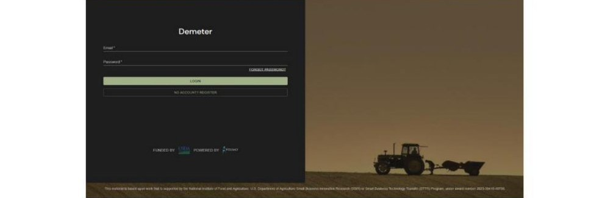
Figure 1. The Demeter login screen. Accounts are tied to user emails for simple account recovery.
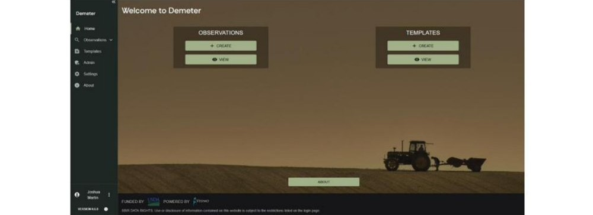
Figure 2. The home page, with a streamlined sidebar for navigation to observations, templates, admin, settings, and about pages.
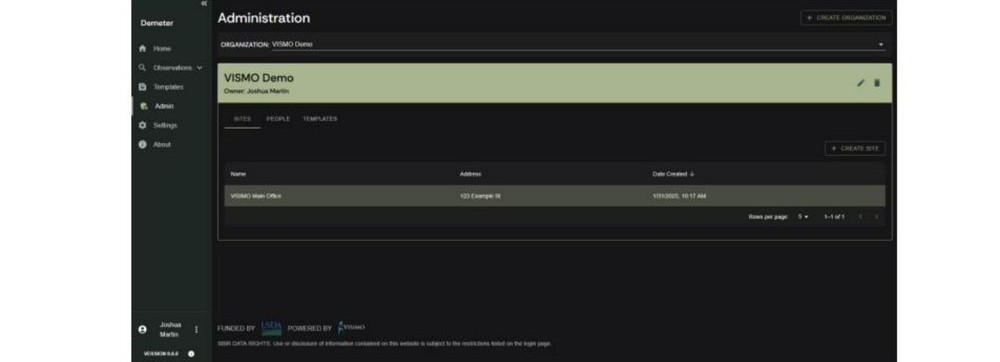
Figure 3. The admin page, where users can add new sites, people, or templates to an organization.
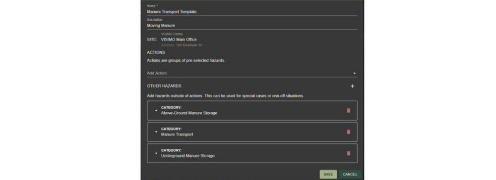
Figure 4. Template creation window for a “Manure Transportation” action with pre-selected hazard categories.
The five-step observation recording workflow guides the user through setup, hazard selection, hazard status recording, additional questions, and review.
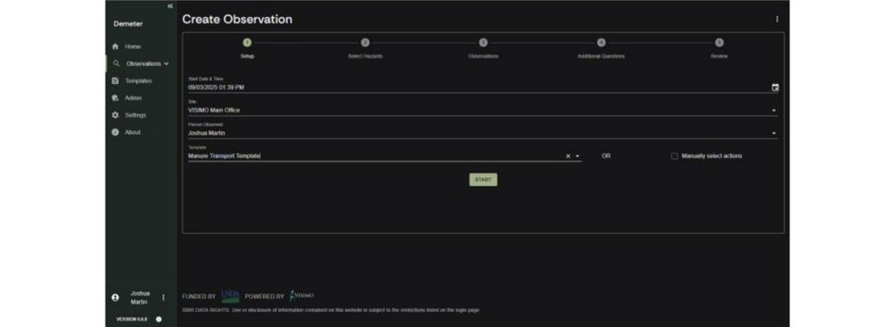
Figure 5. The first step of the observation creation flow: setup. Users identify the site, person, and whether to use a template or custom action.
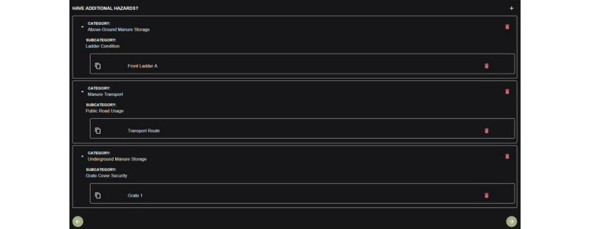
Figure 6. Hazard selection, pre-populated from the chosen template. Users can add anomalous hazards outside the pre-defined set.
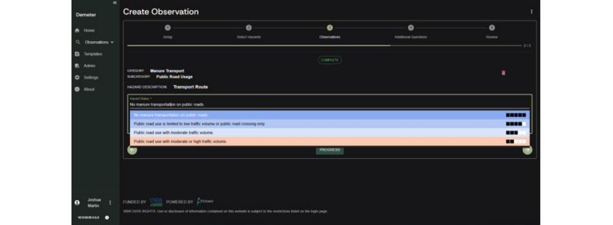
Figure 7. Hazard status page. Users select from color-coded dropdown statuses or enter a custom description.
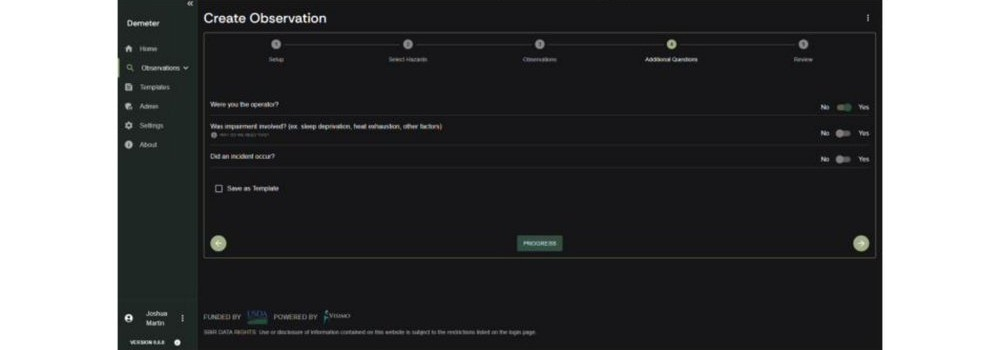
Figure 8. Additional questions screen, including whether the user was the operator, whether impairment was involved, and whether an incident occurred.
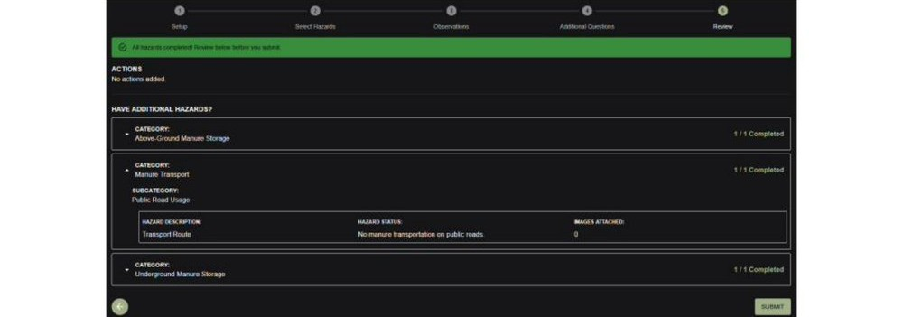
Figure 9. Review page where a user can verify all entered information before submitting the record.
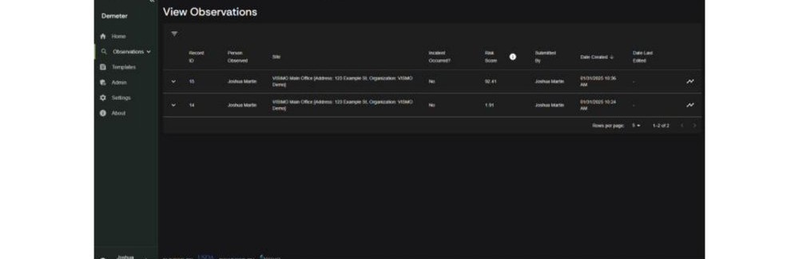
Figure 10. The view observations page. Users can filter and sort the table by any column and open a graphical risk view for each record. Risk scores range from 0 (maximally safe) to 100 (maximally risky).
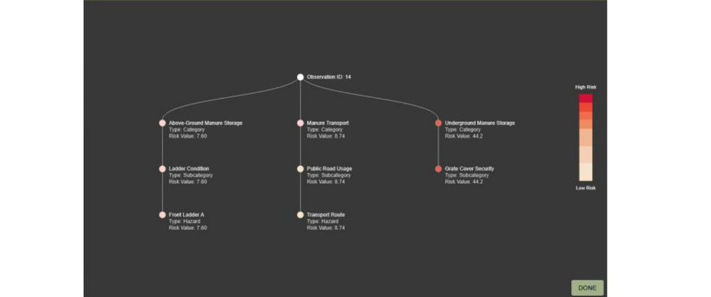
Figure 11. The Observation Network Graph, with color-coded nodes showing the risk level associated with each hazard, subcategory, and category. Administrators use this view to identify which factors contribute most to high-risk observations.
The admin dashboard allows administrators to view incident rates at organization, site, and per-person levels, and to track average risk scores over time to determine whether safety is improving or degrading.
Obj. 3 — NLP and Object Detection Tools
This objective integrated modern multimodal machine learning to improve flexibility, reliability, and generalization in agricultural safety analytics.
BERT-based language embeddings: Hazard analysis in agriculture must span an exceptionally wide range of farm types, tasks, equipment, and livestock. BERT-based models encode free-text hazard descriptions into dense embeddings that capture underlying meaning, allowing the GNN to learn relationships between concepts rather than fixed labels. For example, if the network has learned risk patterns related to working with cattle, it can transfer that understanding to hazards involving pigs or other livestock the first time they are encountered.
CLIP-based image-text verification: A CLIP model compares uploaded images with their associated captions by embedding both into a shared representation space and measuring alignment similarity. This supports reliable record keeping, audit trails, and management oversight, and is particularly valuable for potential insurer use cases where verified documentation can support risk assessment and incentive programs.
Obj. 4 — Alpha Testing
Internal testers ran Demeter through everyday flows starting with account creation and sign-in. Issues uncovered and addressed included missing “Forgot Password” functionality, inability to change a registered email or password, a generic error on re-registration, and the ability to create duplicate accounts. The “Person” form was found excessively time-consuming, with all fields required including height and weight, and age should be computed from date of birth rather than entered manually. Dashboard issues included flipped axis legends and a need to differentiate record counts from actual incidents. All findings were resolved through targeted fixes and interface refinements.
Obj. 5 — Beta Testing
Beta testing with researchers, safety professionals, insurers, and extension partners consistently reinforced that agricultural risk cannot be captured through fixed variable lists or narrow taxonomies. Stakeholders emphasized the sheer diversity of farm operations, making it unrealistic to predefine every relevant hazard. This directly informed the move toward flexible representations that accommodate previously unseen hazards while preserving meaningful risk relationships.
Another key insight was the importance of aggregation and abstraction. Individual-level predictions are often less useful than regional or thematic patterns that guide prevention and training. Beta discussions also highlighted the need for explainable reasoning about why conditions are risky and how mitigation reduces exposure. Together, these insights shaped Demeter into a system designed to support forward-looking, understandable, and actionable safety decisions.
Obj. 6 — Iterative Improvements
GNN architecture enhancements: Laplacian-based positional encodings derived from eigenvalues and eigenvectors of the graph Laplacian were incorporated to provide the network with a more explicit representation of graph structure. Network layers were restructured to more effectively combine graph convolution and graph attention mechanisms. An MLFlow and Optuna-based optimization framework was integrated for automated hyperparameter tuning and consistent experiment tracking.
ExBERT domain adaptation: VISIMO developed an ExBERT-based training pipeline to create a custom embedding module tailored to agricultural safety language, using AgInjuryNews dataset articles. ExBERT extends a standard pre-trained BERT model with a smaller domain-specific extension module. A learned weighting block dynamically determines how much to rely on the pre-trained module versus the extension module. The ExBERT model achieved a 4.2% increase in top-five accuracy, with further gains expected as the training corpus grows.
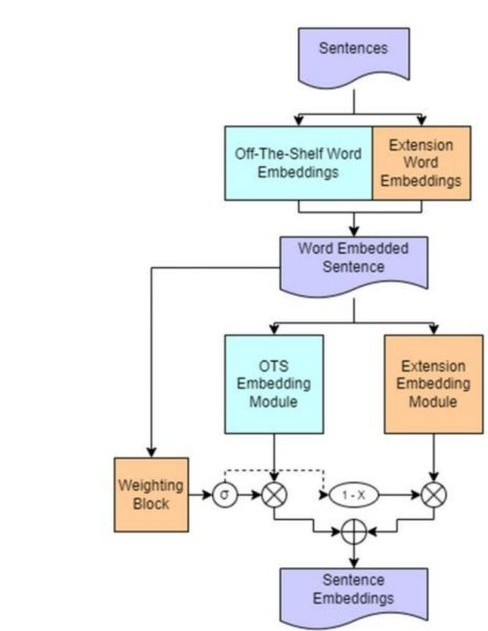
Figure 12. The ExBERT Architecture. The existing pre-trained model is augmented with a domain-specific extension module and a learned weighting block that dynamically blends agricultural vocabulary knowledge with general language understanding.
LLM-driven form entry: VISIMO completed the design and implementation of an LLM-driven form entry system allowing safety observations to be entered using plain-text descriptions. Users describe hazards, conditions, or near-miss events in natural language; the system translates these into structured representations suitable for downstream analysis. This feature is currently undergoing internal testing. Speech-to-text support is identified as a logical next step.
Results and Discussion
Across Phase II, the project successfully translated requirements gathering, user feedback, and technical research into a functioning, field-ready prototype. Improvements to the GNN architecture, including Laplacian-based positional encodings, refined attention-convolution layering, and automated hyperparameter optimization, strengthened the model's ability to exploit relational structure in the data.
| Model | Accuracy | Precision | Recall |
|---|---|---|---|
| Original GNN | 94.9% | 35.21% | 83.33% |
| Updated GNN | 96.3% +1.4 percentage points | 39.42% +4.2 percentage points | 86.77% +3.4 percentage points |
Recall is the most critical metric in a safety context: missing a hazardous situation is far more costly than flagging a safe case as risky. The improvement from 83.33% to 86.77% means the updated model identifies a larger fraction of true risk events, reducing the chance of overlooked dangers. The combination of high recall and improved accuracy indicates the updated GNN is better suited for proactive risk identification, even if it occasionally overestimates risk in low-incident environments.
Taken together, these results indicate that Demeter can support forward-looking, explainable safety decision-making despite incomplete and heterogeneous data. The system's ability to accept custom hazards, aggregate risk across sites and organizations, and clearly communicate drivers of risk aligns with how producers, extension professionals, and insurers evaluate safety in practice.
Commercialization
Agriculture presents a well-known challenge for technology adoption: producers are geographically dispersed, time-constrained, and often cautious of new digital tools. Future commercialization will prioritize deeper engagement through organizations that already have long-standing relationships with producers, including extension services, producer associations, youth organizations (such as FFA chapters), and insurers.
VISIMO plans to broaden pilot and free trial programs supported by hands-on demonstrations and training sessions, delivered through trusted intermediaries such as Virginia Farm Bureau Insurance, cooperative extension offices, and cattle and dairy associations. A presence at agricultural safety meetings, livestock and dairy expos, and insurance-focused events will complement partner-distributed communications to reinforce awareness and build trust.
Conclusion and Next Steps
Phase II successfully advanced Demeter from concept to a deployable prototype that integrates modern machine learning, flexible data input, and a user-centered application design tailored to agricultural safety. The work demonstrated that moving beyond fixed variable lists toward adaptive representations that capture semantic similarity, structural relationships, and real-world context meaningfully improves agricultural hazard analysis.
- 1Complete internal testing and integration of the LLM-based plain-text observation entry system.
- 2Add optional speech-to-text support to further reduce user burden in the field.
- 3Expand pilot deployments with producers, extension organizations, and insurers to validate performance on real-world data.
- 4Refine outputs for decision support as real-world data volume grows and the GNN is trained on live observations.
- 5Expand commercialization through partner-led outreach, industry conferences, and free trial programs, positioning Demeter for scalable adoption.
Appendix: Risk Scoring Formula
While real-world data is being collected to train the GNN, Demeter uses an analytical formula to approximate risk. The fraction of incidents for an activity category relates to observations via the activity-dependent incident rate Ri. An observation's risk score Si,o is the weighted average of its individual hazard factor severity ratings. These are combined into an overall score, normalized to the base rate (assumed 0.0036), and passed through a sigmoid function to produce a final value between 0 and 100.
When no data is available, the model defaults to the base rate assumption (ΣRi = BR). This formula bridges the gap between data availability and usable risk estimates while the platform is adopted and real observations accumulate.